Maya 2027.3：AI 助理可執行場景修改，MCP 連接外部工具
Maya 2027.3 更新加入可執行 MEL 或 Python 場景修改的助理技術預覽，以及連接外部 AI 工具的 MCP 伺服器；Arnold 加速視窗則改善燈光與材質開發的互動預覽。

Maya ★★★★☆
完整分析
由查詢場景走向執行腳本
助理原有的技術問答與場景分析之外，新增執行 MEL 或 Python 的技術預覽，可處理關節改名與失效貼圖修復。腳本必須先由使用者預覽核准，預設安全模式也會阻擋超出場景範圍的腳本。
材質與燈光預覽的互動性
Arnold 加速視窗先以較低解析度渲染，再使用 NVIDIA DLSS 放大與去噪，服務燈光和材質開發；新版隨附對應的 Arnold 外掛。這項改善是預覽流程的變化，來源沒有提供統一的加速倍數測試。
預覽功能的使用邊界
MCP 伺服器仍是技術預覽，只能用於互動工作階段，不支援批次或無介面模式；它可預覽腳本、使用沙箱或完全關閉寫入。原生助理每個動作是一個復原步驟，提示及回應資料會在線上保存四十五天。
BRIEF｜來源已驗證；證據深度較有限，完整分析會明確區分已知資訊與待驗證事項。